2.2. 实体关系图¶
Entity-relationship diagrams
本章介绍*实体-关系图*（ERDs）。ERDs 定义了一种用于高抽象层次数据建模的图形语言。ERDs 在高层次上与关系数据库映射良好，但也可以作为构建非关系数据库的前奏。
ERDs 是由彼得·陈（Peter Chen）提出并在 1976 年的论文 中描述的。在 ERD 之前，已经存在多种数据建模方法，但陈的 ERD 经受住了时间的考验，成为首选方法之一，并在今天得到广泛应用。许多作者在陈的基本模型基础上进行了扩展，以不同的方向扩展符号。因此，现有多种不同的 ERD 符号。对于本书，我们采用 Elmasri 和 Navathe 的符号。
在我们覆盖 ERD 符号的各种元素时，示例将构建一个虚构计算机制造商的数据模型的各个部分。完整模型见下文的 第 2.2.3 节。在 附录 A 中，你还可以找到我们在 第 1 部分 中使用的一些数据集的 ERDs。
This chapter introduces entity-relationship diagrams, or ERDs. ERDs define a graphical language for data modeling at a high level of abstraction. ERDs map well to relational databases at a high level, but can also be used as a precursor to building non-relational databases.
ERDs were conceived of by Peter Chen and described in a 1976 paper. While various approaches to data modeling existed before the ERD, Chen’s ERD has stood the test of time to become one of the preferred methods and is in wide use today. Many authors have expanded upon Chen’s basic model, extending the notation in different directions. As a result, there are many different ERD notations in use. For this book, we adopt the notation of Elmasri and Navathe.
As we cover the various elements of the ERD notation, our examples will build pieces of a data model for a fictional computer manufacturer. The complete model is given in Section 2.2.3 below. In 附录 A: 本书中使用的示例数据集, you can also find ERDs for some of the datasets that we used in Part 1.
2.2.1. 基本模型¶
Basic model
顾名思义，ERDs 关注的是 实体 及其之间的 关系 。每个元素及其相关元素通过包含文本标签的简单形状表示，并用直线连接。
As the name suggests, ERDs are concerned with entities and the relationships between them. Each of these elements and its related elements are denoted using simple shapes containing text labels and connected with straight lines.
2.2.1.1. 实体¶
Entities
实体代表具有独立存在的事物或对象；个人、产品和公司都是一些示例。实体在我们的视觉建模语言中充当“名词”。实体用矩形表示；矩形上标有指示所建模概念的名称：
区分实体和实体的实例（例如，特定的事物或对象）是很重要的。实体**employee**表示所有员工，而不是某个公司的特定员工。
Entities represent things or objects with independent existence; persons, products, and companies are some examples. Entities act much like the “nouns” of our visual modeling language. Entities are denoted by rectangles; the rectangle is labeled with a name indicative of the concept being modeled:
It is important to distinguish between an entity, which represents the type of the thing or object being modeled, and instances of the entity, e.g., a particular thing or object. The entity employee models all employees, not a specific employee of a company.
2.2.1.2. 属性¶
Attributes
实体通过其属性或*属性*进一步描述。属性用椭圆表示，并通过直线与其实体连接。例如，员工有名字：
您可以根据需要将任意数量的属性附加到实体上。
Entities are further described by their properties, or attributes. Attributes are denoted by ovals and attached to their entities with straight lines. For example, employees have names:
You can attach as many attributes as necessary to an entity.
2.2.1.3. 键¶
Keys
每个实体至少有一个属性可以唯一标识该实体的实例。这些*关键属性*通过对属性标签进行下划线标识。对于我们的计算机公司，每个员工都被分配一个 ID 号码以进行唯一识别：
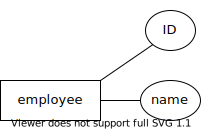ERD 允许多个关键属性：例如，我们可能还希望为每个员工存储一个政府颁发的身份证号码（例如，美国使用的社会安全号码）。在这种情况下，我们将有两个带下划线标签的属性。请注意，这与由多个部分组成的关键属性不同！员工可以通过其公司 ID 或政府颁发的身份证号码中的任一项唯一识别 - 您不需要同时知道两者。复合键将在后面的部分中讨论。
Every entity has at least one attribute that uniquely identifies instances of the entity. These key attributes are indicated by underlining the attribute label. For our computer company, each employee is given an ID number for unique identification:
ERDs allow for multiple key attributes: for example, we might wish to also store a government issued identification number (such as the SSN used in the United States) for each employee. In this case, we would have two attributes with underlined labels. Note that this is not the same as a key attribute composed of multiple parts! An employee can be uniquely identified by either their company ID or by their government issued identification number - you do not need to know both. Composite keys will be discussed in a later section.
2.2.1.4. 关系¶
Relationships
两个或多个实体可以参与关系。关系在我们的建模语言中起到“动词”的作用。关系用菱形表示，并通过直线连接到参与的实体：
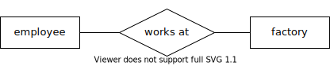这个图像可以读作一个句子：“员工在工厂工作”。请注意，图形的布局并没有隐含方向；您需要利用对数据领域的知识来判断，这个图形很可能并不是在表示“工厂在员工那里工作”。
Two or more entities may participate in a relationship. Relationships act like the “verbs” in our modeling language. Relationships are denoted by diamonds and are connected to the participating entities by straight lines:
This diagram reads like a sentence: “employee works at factory”. Note that no direction is implied by the layout of the diagram; you have to use your knowledge of the data domain to know that the diagram probably does not mean “factory works at employee”.
2.2.1.5. 基数比率和参与度¶
Cardinality ratios and participation
在工厂工作的员工有多少，员工可以在多少个工厂工作？这些是我们模型（以及我们将基于该模型创建的数据库）中重要的信息。
基数比 让我们能够表示一个实体在关系的另一端映射到另一个实体的实例数量，以及反之亦然。基本模型定义的基数有 1 和 N**（或 **n）。基数为 1 实际上意味着“零或一个”；基数为 N 意味着“零、一个或多个”。由于大多数关系是二元的（仅涉及两个参与实体），所以常见的基数比数量不多：
1:1，读作“一对一”
1:N，读作“一对多”（等同于 N:1，或“多对一”）
N:M（或 N:N），读作“多对多”
我们在模型中显示基数比，放在连接关系与实体的线旁边：
该图的基数比暗示了关于员工与工厂之间关系的两个陈述。首先，“每个员工在零个或一个工厂工作”。其次，“每个工厂有零个或多个员工在工作”。
参与度*是一个密切相关的话题。如果每个实体的实例都必须与关系中另一实体的实例相匹配，则该实体被称为在关系中具有 *完全参与。实际上，这为关系另一端的实体提供了最小基数。以下是一个示例——请注意这是 员工 和 工厂 之间的第二个关系：
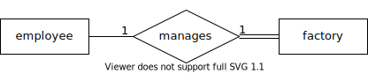工厂 和 管理 之间的双线表示 工厂 在该关系中具有完全参与。该图的基数比和参与度暗示了两个略微不同的陈述：“每个员工管理 零个或一个 工厂”和“每个工厂 恰好有一个 员工在管理”。也就是说，每个工厂都应该有一个经理，但只有一些员工管理工厂。
与完全参与相对的是用单线表示的 部分参与。
虽然在 ERD 上指明完全参与提供了有用的信息，但它没有基数比那么关键。正如我们将在 Chapter 2.3 中看到的，完全参与可以影响在将图转换为关系数据库时的一些决策（特别是对于 1:1 关系），但其缺失通常不会造成损害。
How many employees work at a factory, and how many factories can an employee work at? This is important information for our model (and for the database we will create from it).
Cardinality ratios let us indicate the general number of instances of an entity that map to another entity on the other side of the relationship, and vice versa. The cardinalities defined by the basic model are 1 and N (or n). A cardinality of 1 actually means “zero or one”; a cardinality of N means “zero, one, or many”. As most relationships are binary (involving only two participating entities), there are a small number of commonly occurring cardinality ratios:
1:1, read as “one-to-one”
1:N, read as “one-to-many” (equivalently, N:1, or “many-to-one”)
N:M (or N:N), read as “many-to-many”
We show the cardinalities on our model next to the line connecting the relationship to the entity:
This diagram’s cardinality ratio implies two statements about the relationship between employees and factories. First, “each employee works at zero or one factory”. Second, “each factory has zero or more employees working at it”.
Participation is a closely related topic. An entity is said to have total participation in a relationship if every instance of the entity must be matched with instances of the other entity in the relationship. In effect, this provides a minimum cardinality for the entity on the other side of the relationship. Here is an example - note that this is a second relationship between employee and factory:
The double line between factory and manages says that factory has total participation in the relationship. This diagram’s cardinality ratio and participation imply two subtly different statements: “each employee manages zero or one factories” and “each factory has exactly one employee managing it”. That is, every factory is expected to have a manager, but only some employees manage a factory.
The alternative to total participation, denoted using a single line, is partial participation.
While indicating total participation on an ERD provides useful information, it is not as critical as cardinality ratios. As we will see in Chapter 2.3, total participation can influence some decisions when converting our diagram to a relational database (particularly for 1:1 relationships), but its absence is generally not harmful.
2.2.1.6. 整合¶
Putting it together
下面是一个包含上述示例的图示，并增加了一些属性以完善实体：
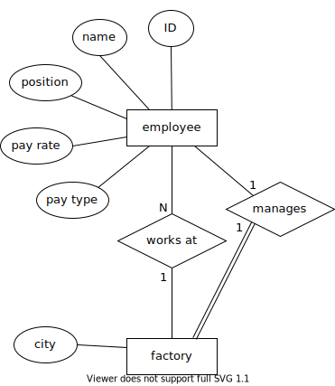请注意，工厂 实体没有使用生成键，而是使用了一个“自然”键——工厂所在的城市。（这仅在我们的公司在一个城市中没有超过一个工厂时有效！）
虽然这只是我们最终将要开发的完整模型的一部分，但它是一个有效的 ERD，我们可以基于此构建数据库。所有必要的细节都已到位。
我们的模型中也没有不必要的信息重复。增加属性或其他功能以预测将来的数据库是很有诱惑力的；例如，我们可能认为员工应该有一个属性指示他们在哪个工厂工作。然而，（至少某些）员工在工厂工作这一事实已经在 工作于 关系中隐含存在。这个关系将产生必要的数据库结构，将员工与工厂连接起来。
Below is a diagram incorporating the examples above, with some additional attributes to fill out the entities:
Note that the factory entity does not use a generated key, but a “natural” one - the city in which the factory is located. (This only works if our company has no more than one factory in a city!)
While this is only part of the complete model that we will ultimately develop, it is a valid ERD from which we could build a database. All of the necessary detail is in place.
There is also no unnecessary duplication of information in our model. It is tempting to add attributes or other features that anticipate the database to come; for example, we might think that employees should have an attribute indicating at which factory they work. However, the fact that (at least some) employees work at a factory is already implicit in the relationship works at. This relationship will give rise to the necessary database structures connecting employees to factories.
2.2.2. 更复杂的建模选项¶
More complex modeling options
本节将研究上述示例中未涉及的一些情况，还将揭示一些涵盖上述基本模型未涉及的情况的附加符号。
This section will look at some cases not covered in the examples above, and will also reveal some additional notation covering situations not addressed by the basic model above.
2.2.2.1. 递归关系¶
Recursive relationships
关系可以在一个实体与其自身之间存在。这在建模层次关系时尤其有用。在我们虚构的计算机公司中，每个员工（除了公司的负责人）都有一个监督者，监督者也是另一名员工。这可以很容易地建模为连接 员工 与 员工 的一对多关系：
为了增加清晰度，我们已标注连接关系的线，说明员工在关系中扮演的角色：一名监督者监督多名被监督者。
Relationships can exist between an entity and itself. This is frequently useful, especially in modeling hierarchical relationships. In our fictional computer company, each employee (except for the head of the company) has a supervisor, who is another employee. This is easily modeled as a one-to-many relationship connecting employee to employee:
For added clarity, we have annotated the lines connecting the relationship with the roles that employees play in the relationship: one supervisor supervises many supervisees.
2.2.2.2. 弱实体¶
Weak entities
在某些情况下，我们可能希望建模一个没有唯一标识符的实体，但可以通过与另一个实体的关系来唯一识别。举个例子，我们的计算机制造商的每个工厂将包含装配线。我们希望在数据库中跟踪每条装配线的某些信息，例如装配线的每日 *吞吐量*（它每天可以生产的计算机数量）。我们希望将这些建模为数据模型中的一个实体，但目前还不清楚装配线的哪个属性可以作为良好的标识符。
当然，我们可以给每条装配线分配一个生成的唯一标识符，但有一种更自然的方法来识别装配线。在每个工厂中，装配线从 1 开始编号，通常按它们在工厂车间中的位置顺序排列。为了识别特定的装配线，我们首先说明它所在的工厂，然后是其在工厂中的编号。
当一个实体依赖于另一个实体进行完全识别时，依赖实体被称为 弱实体，我们用双重轮廓的矩形来表示。弱实体只有一个部分或弱键——在我们的例子中，这就是装配线在工厂中的编号。我们用虚线下划线来标记弱键。我们还指出弱实体依赖于其身份的关系，以将其与弱实体参与的任何其他关系区分开。我们称这种关系为 标识关系，用双重轮廓的菱形表示。父实体的键与弱实体的弱键结合构成弱实体实例的唯一标识符。
以下是我们装配线示例的图示：
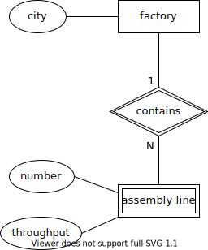In some situations, we may want to model an entity for which we do not have a unique identifier, but which can be uniquely identified in relationship with another entity. As an example, each of the factories of our computer manufacturer will contain assembly lines. We wish to track certain information about each assembly line in our database, such as the daily throughput of the assembly line (the number of computers it can produce in a day). We wish to model these as an entity in our data model, but it is not immediately clear what property of an assembly line would make a good identifier.
We could, of course, give every assembly line a generated unique identifier, but there is a more natural way to identify assembly lines. In each factory, assembly lines are simply numbered starting from 1, most likely in order by their position on the factory floor. To identify a particular assembly line, we first state which factory it is in, and then its number within the factory.
When an entity is dependent on another entity for full identification, the dependent entity is called a weak entity, and we notate it using a rectangle with doubled outline. The weak entity has only a partial, or weak, key - in our example, this is the number of the assembly line within the factory. We note the weak key using a dashed underline. We also call out the relationship that the weak entity depends on for its identity, to distinguish it from any other relationships the weak entity participates in. We call this relationship the identifying relationship, and draw it as a diamond with a doubled outline. The key of the parent entity together with the weak key of the weak entity constitutes a unique identifier for instances of the weak entity.
Here is the diagram of our assembly line example:
2.2.2.3. 复合属性¶
Composite attributes
我们有时希望建模一个自然由多个部分组成的属性。例如，一个人或公司的地址可能由街道地址、城市、邮政编码等组成。为了表示这些属性作为实体更大属性的一部分共同工作，我们可以使用 复合属性，它被绘制为一个常规属性，并附有其组成属性。
在我们的键本身由多个属性组成的情况下，使用复合属性是必不可少的。我们不能简单地给每个键的组成部分下划线，因为这会表示每个部分都是一个独立的键。相反，我们必须创建一个复合属性；我们给复合属性下划线，但不对组成属性下划线。
在我们的计算机制造商示例中，公司的每种计算机（或“型号”）都由一个名称（表示某条计算机系列）和一个编号（表示该系列的版本）来标识。为了没有更好的名称，我们将这些组合为一个标记为“指定”的复合属性：
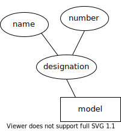We may sometimes wish to model an attribute that is naturally composed of multiple parts. For example, the address of a person or company may be composed of a street address, city, postal code, and so forth. To indicate that these attributes work together as part of a larger property of the entity, we can use a composite attribute, which is drawn as a regular attribute with its component attributes attached.
The use of a composite attribute is essential in cases where our key is itself composed of multiple attributes. We cannot simply underline each component of the key, as this would indicate that each is a key by itself. Instead, we must create a composite attribute; we underline the composite, but not the component attributes.
In our computer manufacturer example, each type of computer (or “model”) that the company builds is identified by a name (indicating some line of computers), and a number (indicating the version of that line of computers). For lack of a better name, we group these as a composite labeled “designation”:
2.2.2.4. 多值属性¶
Multivalued attributes
某些实体的属性不是简单值，而是值的列表或集合。由于在根据数据模型创建数据库时需要特殊处理，我们使用双重轮廓来区分这些 多值属性 和常规属性：
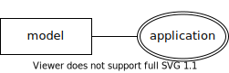在我们的示例中，计算机型号可能针对特定应用程序进行设计或营销，例如游戏、多媒体或商务。由于计算机可能符合多个类别，我们将其建模为一个多值属性。
将可能的属性值建模为单独的实体是多值属性的另一种替代方案，该实体与原始实体通过多对多关系连接。这个单独的实体只会有一个属性，其实例将代表可以与原始实体关联的可能值。
Some properties of entities are not simple values, but lists or sets of values. As these will need special handling when we create a database from the data model, we differentiate these multivalued attributes from regular attributes using a doubled outline:
In our example, computer models may be designed or marketed for particular applications, such as gaming, multimedia, or business. As computers may fit into more than one of these categories, we model it above as a multivalued attribute.
An alternative to making a multivalued attribute is modeling the possible attribute values as a separate entity, which is connected to the original entity with a many-to-many relationship. The separate entity would have only the single attribute, and its instances would represent the possible values that can be associated with the original entity.
2.2.2.5. 派生属性¶
Derived attributes
实体可能具有重要的属性，我们希望在数据模型中记录这些属性，但更倾向于从数据模型中的其他值计算得出，而不是直接存储在数据库中。例如，人的年龄是许多应用程序中一个重要的属性，但将这个值存储在数据库中通常是一个糟糕的选择，因为一个人的年龄会随时间变化， necessitating 定期更新数据。相反，我们可以存储这个人的出生日期，并在每次需要时计算其年龄。
在我们的计算机制造商示例中，我们关注每个工厂的总生产能力。虽然我们可以将其作为 factory 的一个属性，但我们注意到，工厂的生产能力可以通过汇总工厂的装配线的生产能力来计算。我们将这些计算出的属性建模为 派生属性，并使用虚线轮廓表示：
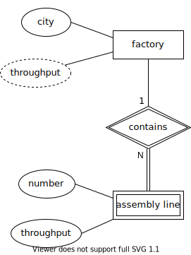Entities may have important properties that we want to note on our data model, but which we would prefer to compute from other values in the data model, rather than store in our database. For example, the age of a person is an important property for many applications, but storing this value in the database is generally a poor choice, as a person’s age changes over time, necessitating regular updates to the data. Instead, we might store the person’s birth date, and calculate the person’s age each time we need it.
In our computer manufacturer example, we are interested in the total throughput of each factory. While we could make this an attribute of factory, we note that a factory’s throughput can be calculated by summing up the throughputs of the factory’s assembly lines. We model these calculated properties as derived attributes, using a dashed outline:
2.2.2.6. 关系属性¶
Relationship attributes
虽然大多数属性附加在实体上，但我们也可以将属性附加在关系上。当一个属性适用于多个实体的组合而不是单个实体时，我们这样做。这通常发生在多对多关系中。
我们的虚构计算机制造商从多个供应商那里购买计算机零件。制造商将具有相似属性的某些零件视为一个单一的“零件”。例如，数据库可能包含“8TB 7200RPM硬盘”的条目，无论品牌如何。然而，在任何给定时刻，一个供应商的某个零件的价格可能与另一个供应商的相同零件的价格不同。因此，这个价格不能属于 part 实体——它也依赖于 vendor。同样，供应商提供许多不同的零件，因此价格不能属于 vendor 实体。相反，它属于这些实体之间的关系：
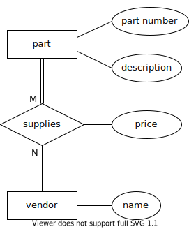While most attributes are attached to entities, we can also attach attributes to relationships. We do this when an attribute properly applies to a combination of entities, rather than to a single entity. This most frequently occurs with many-to-many relationships.
Our fictional computer manufacturer buys computer parts from multiple vendors. The manufacturer considers certain parts that have similar properties to be a single “part”. For example, the database might contain an entry for the part “8TB 7200RPM hard drive”, regardless of brand. However, at any given time, one vendor’s price for a given part may be different from another vendor’s price for the same part. This price therefore cannot belong to the part entity - it depends on vendor, too. Similarly, vendors supply many different parts, so the price cannot belong to the vendor entity. Instead, it belongs to the relationship between these entities:
2.2.2.7. 更高元数关系¶
Higher-arity relationships
我们提到过两个 或更多 实体可以参与一个关系。虽然大多数关系是二元的，但你可能会遇到需要关联三个（或更多）实体的情况。我们的模型中没有这个例子。然而，一个经典的例子出现在大型组织或政府机构中，这些机构有许多涉及复杂合同的项目与零件供应商。项目使用许多零件，而零件可能在多个项目中使用；此外，同一零件可能来自不同的供应商。通常，这可以通过两个多对多关系来建模（非常类似于我们计算机制造商模型中的内容）。然而，如果公司有法律协议，规定某个项目中某种类型的零件必须来自某个供应商，而在不同项目中，同一类型的零件必须来自不同的供应商，这种情况就不容易使用二元关系建模。我们需要一个连接零件、项目和供应商的关系。
在这个例子中，关系是多对多对多的，可以表示为 M:N:P（或 N:N:N）：
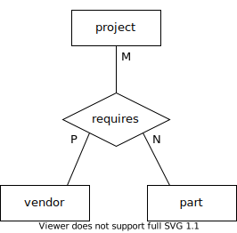We stated that two or more entities could participate in a relationship. While most relationships are binary, you may run into cases where you need to relate three (or more) entities. We do not have an example of this in our model. However, a classic example arises in the context of large organizations or government agencies with many projects involving complex contracts with parts suppliers. Projects use many parts, and parts may be used in multiple projects; additionally, the same part might be available from different vendors. Normally this might be modeled using two many-to-many relationships (very much like what is in our computer manufacturer model). However, if the company has legal agreements that, for a certain project, a certain type of part must come from a certain vendor, while for a different project, the same type of part must come from a different vendor, the situation is not easily modeled using binary relationships. What we need is a relationship that connects parts, projects, and vendors.
In this example, the relationship is many-to-many-to-many, which may be notated as M:N:P (or N:N:N):
2.2.3. 完整示例¶
Complete example
以下是我们完成的示例；图中的大部分部分已在上文中解释。现在你知道不同元素的含义，图的其余部分应该是自我解释的：
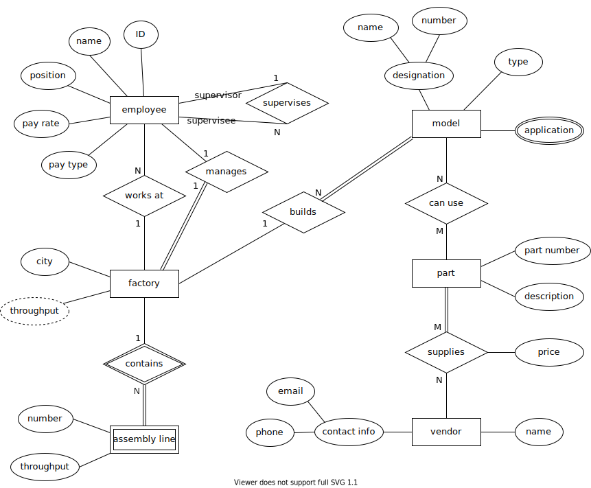Below is our completed example; most parts of the diagram have been explained above. Now that you know what the different elements mean, the rest of the diagram should be self-explanatory:
2.2.4. 使用 ERD 设计数据库¶
Using ERD to design a database
虽然 ERD 有许多应用，但我们强调它作为分析和设计工具的使用。ERD 促进了数据库开发人员、程序员、领域专家和数据库用户之间的沟通。ERD 生成数据的抽象模型。尽管我们将在 Chapter 2.3 中研究如何将 ERD 转换为关系数据库，但 ERD 不包含与 SQL 或关系数据库特定的细节。特别是在分析的早期阶段，过早考虑这些细节实际上可能是适得其反的；你的重点应放在创建对数据的共同理解上。
同样，我们鼓励你避免在 ERD 符号的完美符合上花费精力。为了改善沟通，你可以根据自己的需要自由调整符号。在任何有帮助的地方，你都可以（甚至应该）添加文本解释——设计一个大型数据库是一项复杂的工作，很容易忘记特定设计决策的原因。然而，随着你开始用实际的数据库构建来测试设计，符号细节在设计的后期阶段将变得更加重要。
你在为项目创建数据库时使用的实际过程可能由你的项目组或组织决定，但以下提供了一些一般建议。
While an ERD has many applications, we emphasize its use as an analysis and design tool. ERDs facilitate communication between database developers, programmers, domain experts, and database users. An ERD produces an abstract model of the data. Although we will examine how to turn our ERD into a relational database in Chapter 2.3, the ERD contains no details specific to SQL or relational databases. Especially in the early stages of analysis, thinking ahead to such details can actually be counterproductive; your focus should be on creating a shared understanding of the data.
In a similar vein, we encourage you to avoid spending effort on perfect conformance to the ERD notation. In the interest of improved communication, you should feel free to adapt the notation to your needs. You can (and perhaps should) add text explanations wherever they are helpful - designing a large database is a complex endeavor, and it can be easy to forget the reasons for particular design decisions. Notational details will become more important in the later stages of design, however, as you begin to test your design with actual database construction.
The actual process you use to create a database for a project may be dictated by your project group or organization, but some general advice is provided below.
2.2.4.1. 分析¶
Analysis
设计任何软件的关键第一步是理解项目的需求。关于你的数据库，需求可能由以下因素决定：
数据领域，例如，施加结构和关系于数据的事实
用户需求，例如，他们希望从数据中获得的答案或见解
数据源，例如，实际上可供存储的数据值
应用程序要求，例如，其他软件如何查看或处理数据
因此，你可能需要与领域专家（对数据适用领域有深入知识的人）、最终用户、数据提供者和软件开发人员交谈，以确定这些需求。头脑风暴实体、属性和关系是这些讨论的良好起点。在白板或纸张上列出数据元素，让所有人都能看到。其中一些是潜在实体，有些是属性，还有一些甚至可能是关系。让人们提出数据元素之间的关系，并将这些关系写成简单的“主语 动词 宾语”句子。头脑风暴时不必穷尽所有可能性；在后续步骤中会发现更多实体、属性和关系。
一旦你拥有了一组良好的数据元素和关系，就可以开始着手创建 ERD。起初，重点放在基本模型元素——实体、属性和关系上。识别所有实体的潜在关键属性。考虑基数比率；通过它们对所涉及实体的暗示陈述来检查这些比率是否合理，例如，“此实体的每个实例与其他实体的 x 个实例有这种关系”。质疑所有假设！例如，如果你将某个属性识别为实体的关键，问问每个实体实例是否确实都有该属性。
构建一个令所有参与者满意的 ERD 可能需要大量时间和多次讨论。这个过程可能会混乱，并在最初显得混沌。要有耐心，尝试不同的选项，并进行渐进式改进。在继续下一步之前，并不需要解决每一个分歧；在后续步骤中，当你发现问题和疑问时，可能需要多次回顾 ERD。
A crucial first step in the design of any software is understanding the requirements of your project. In regards to your database, requirements may be dictated by:
the data domain, e.g., facts which impose structure and relationships on the data
user needs, e.g., the answers or insights they want to obtain from the data
data sources, e.g., the data values that are actually available to be stored
application requirements, e.g., how other software will view or manipulate the data
You may therefore need to talk with domain experts (people who have deep knowledge about the area the data applies to), end users, data providers, and software developers to determine these requirements. Brainstorming entities, attributes, and relationships is a great starting point for these discussions. List data elements on a whiteboard or piece of paper where everyone can see. Some of these are potential entities, some are attributes, and some may even be relationships. Have people propose relationships between the data elements, and write these as simple “subject verb object” sentences. It is not necessary to be exhaustive in your brainstorming; additional entities, attributes, and relationships will be discovered in later steps.
Once you have a good set of data elements and relationships, you can begin working on an ERD. Focus at first on basic model elements - entities, attributes, and relationships. Identify potential key attributes for all of your entities. Consider cardinality ratios; examine whether these make sense by the statements they imply about the entities involved, e.g., “each instance of this entity has this relationship with x number of instances of the other entity”. Question all assumptions! For example, if you identify some attribute as a key for an entity, ask if every instance of the entity actually has that attribute.
It may take significant time and multiple discussions to build an ERD that is satisfactory to everyone involved. This process is messy and may seem chaotic at first. Be patient, try different options, and make incremental improvements. It is not necessary to solve every disagreement before moving on to next steps; you may need to revisit the ERD multiple times as you uncover questions and issues in later steps.
2.2.4.2. 设计、实施及其他¶
Design, implementation, and beyond
一旦你有了 ERD，就可以将其作为下一步构建数据库，或者可以进行进一步的设计活动。你可能希望构建一个更低级的数据模型，比如 *逻辑模型*（在 Chapter 2.4 中讨论）作为一个中间步骤。这在某种程度上取决于与正在构建的其他系统（例如软件）的互动。正如在 Chapter 2.3 中讨论的那样，ERD 并未完全决定你的数据库将如何构建；例如，你需要选择表和列的名称（对于关系数据库），以及在 ERD 中由属性表示的不同值的数据类型。
无论你的下一步是什么，你很可能会遇到某种问题：不成立的假设、新的问题，或在将 ERD 转换为更具体形式时遇到的其他问题。作为你过程的一部分，预计要与领域专家和项目利益相关者重新审视设计，以解决这些问题。当你开始尝试将数据放入新数据库、编写与数据库交互的软件时，以及当用户开始测试数据库和/或软件时，这种情况可能还会再次发生。
无论你是在每个阶段与 ERD 解决问题，还是在某个更低的层次上，保持 ERD 与实际实施的数据库对齐作为你系统文档的一部分是很有价值的。系统会随着时间的推移而变化；当你需要修改数据库时，你将希望有一些关于早期数据库设计决策的文档，ERD 可能在设计系统更新时发挥作用。最新的 ERD 也将帮助新的数据库用户或软件开发人员更快地熟悉系统。
You can build a database as the next step once you have an ERD, or you can engage in further design activities. You may wish to build a lower level data model, such as a logical model (discussed in Chapter 2.4) as an intermediate step. Some of this will depend on interactions with other systems that are being built (e.g., software). As will be discussed in Chapter 2.3, the ERD does not fully dictate how your database will be built; for instance, you need to choose table and column names (for a relational database), as well as data types for the different values represented by attributes in your ERD.
Regardless of your next step, you are likely to run into problems of some sort: assumptions that do not hold, new questions, or other issues in translating the ERD into a more concrete form. As part of your process, expect to revisit the design with your domain experts and project stakeholders to resolve these problems. This will probably happen yet again when you start trying to put data into your new database, when software is written to interact with the database, and when users start testing the database and/or software.
Whether you resolve issues at each stage with the ERD or at some lower level, it can be valuable to keep the ERD aligned with the database as implemented as part of your documentation of the system. Systems change over time; when it is time to modify your database, you will want some documentation of the design decisions that went into the earlier database, and the ERD may play a part in designing the updates to your system. An up-to-date ERD will also help new database users or software developers become acquainted with the system more quickly.
2.2.5. 自检练习¶
Self-check exercises
本节提供了一些问题，以帮助你检查对实体关系图和数据建模的理解。
哪个数据元素表示具有独立存在的事物或对象，例如一个人、产品或公司？
显示答案
答案是“实体(entity)”。
一个 ____ 描述实体的一个属性。
显示答案
答案是“属性(attribute)”。
哪个数据元素连接两个或多个实体，并在我们的数据模型中充当“动词”？
显示答案
答案是“关系(relationship)”。
将形状拖到相应的模型元素。
oval
rectangle
diamond
entity
attribute
relationship
显示答案
rectangle - entity
oval - attribute
diamond - relationship
假设你正在设计一个数据库以存储关于电影的信息。你的 movie 实体的一个好键属性可能是什么？
主演
标题
第一行对话
标题和发行年份（复合）
显示答案
A - 许多演员，特别是主演，参与过许多电影。主演不太可能是唯一标识符。
B - 许多电影在相同标题下被重拍（有些电影与无关的影片共享标题），因此这不是一个好的唯一标识符。
C - 可能不是。对大多数电影来说，它可能是唯一的，但可能并非所有电影都是如此，并且作为键使用这是一个相当大的数据。
D - 这是这里给出的选项中最好的选择。或者，你可以使用人工生成的 ID 值。
考虑这里显示的实体和关系：
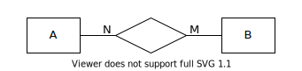哪个陈述最准确地描述了该关系？
每个 A 实例与零或一个 B 实例相关联；每个 B 实例与零或一个 A 实例相关联。
每个 A 实例与零或多个 B 实例相关联；每个 B 实例与零或多个 A 实例相关联。
每个 A 实例与一个或多个 B 实例相关联；每个 B 实例与一个或多个 A 实例相关联。
显示答案
A: 不正确。“N”标签对最大基数有什么暗示？
B: 正确。该关系是多对多，双方都有部分参与。
C: 不正确。A 和 B 在关系中的参与情况如何？这对最小基数有什么暗示？
考虑这里显示的实体和关系：
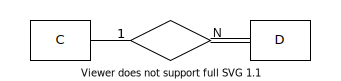哪个陈述最准确地描述了该关系？
每个 C 实例与零或一个 D 实例相关联；每个 D 实例与一个或多个 C 实例相关联。
每个 C 实例与零或多个 D 实例相关联；每个 D 实例与正好一个 C 实例相关联。
每个 C 实例与一个或多个 D 实例相关联；每个 D 实例与零或一个 C 实例相关联。
显示答案
A: 不正确。每个基数标签描述关系同一侧的实体。
B: 不正确。重新考虑关系每一侧的参与情况，以及这对最小基数的暗示。
C: 正确。
一些实体的实例不能仅根据其属性唯一识别，而必须与父实体实例关联以实现完整识别。我们称这些为 _____ 实体。
显示答案
答案是“弱(weak)”。
假设我们正在建模一个关于书籍的简单数据库。对于每本书，我们想包括有关书籍所属类型的信息。许多书籍可以属于多个类型。我们应该使用什么类型的属性来表示类型？
多值
派生
复合
键
显示答案
A: 正确。
B: 可能不是，除非类型信息可以从数据库中存储的其他信息推断出来。
C: 可能不是，尽管你可以主张存储一个通用的类型类别和一个更具体的子类型。
D: 绝对不是。许多书籍属于同一类型，因此类型不是书籍的唯一标识符。
This section has some questions you can use to check your understanding of entity-relationship diagrams and data modeling.
Which data element models a thing or object with independent existence, such as a person, product, or company?
Show answer
The answer is “entity”.
An ____ describes a property of an entity.
Show answer
The answer is “attribute”.
Which data element connects two or more entities and acts as a “verb” in our data model?
Show answer
The answer is “relationship”.
Drag the shape to the corresponding model element.
oval
rectangle
diamond
entity
attribute
relationship
Show answer
rectangle - entity
oval - attribute
diamond - relationship
Suppose you are designing a database to store information about movies. What might be a good key attribute for your movie entity?
Lead actor
Title
First line of dialogue
Title and year of release (composite)
Show answer
A - Many actors, especially lead actors, have worked on many movies. Lead actor is unlikely to be a unique identifier.
B - Many movies have been remade under the same title (and some movies share a title with unrelated films), so this is not a good unique identifier.
C - Probably not. It might be unique for most films, but probably not all films, and it is a fairly large piece of data to use as key.
D - This is the best of the choices given here. Alternately, you might use an artificially generated id value.
Consider the entities and relationship shown here:
Which statement most accurately describes the relationship?
Each instance of A is associated with zero or one instance of B; each instance of B is associated with zero or one instance of A.
Each instance of A is associated with zero or more instances of B; each instance of B is associated with zero or more instances of A.
Each instance of A is associated with one or more instances of B; each instance of B is associated with one or more instances of A.
Show answer
A: Incorrect. What does the label “N” imply about maximum cardinality?
B: Correct. The relationship is many-to-many, with partial participation on both sides.
C: Incorrect. What is the participation of A and B in the relationship? What does that imply about the minimum cardinality?
Consider the entities and relationship shown here:
Which statement most accurately describes the relationship?
Each instance of C is associated with zero or one instance of D; each instance of D is associated with one or more instances of C.
Each instance of C is associated with zero or more instances of D; each instance of D is associated with exactly one instance of C.
Each instance of C is associated with one or more instances of D; each instance of D is associated with zero or one instance of C.
Show answer
A: Incorrect. Each cardinality label describes the entity on the same side of the relationship.
B: Incorrect. Reconsider the participation on each side of the relationship, and what that implies about minimum cardinality.
C: Correct.
Some entities have instances that cannot be uniquely identified based solely on their attributes, but must be associated with a parent entity instance for full identification. We call these _____ entities.
Show answer
The answer is “weak”.
Suppose we are modeling a simple database about books. For each book we want to include information about the genres the book belongs to. Many books can belong to more than one genre. What kind of attribute should we use for genre?
Multivalued
Derived
Composite
Key
Show answer
A: Correct.
B: Probably not, unless genre information can be deduced from some other information stored in the database.
C: Probably not, although you could make a case for storing a general genre category and a more specific sub-genre.
D: Definitely not. Many books belong to the same genre, so genre is not a unique identifier for a book.